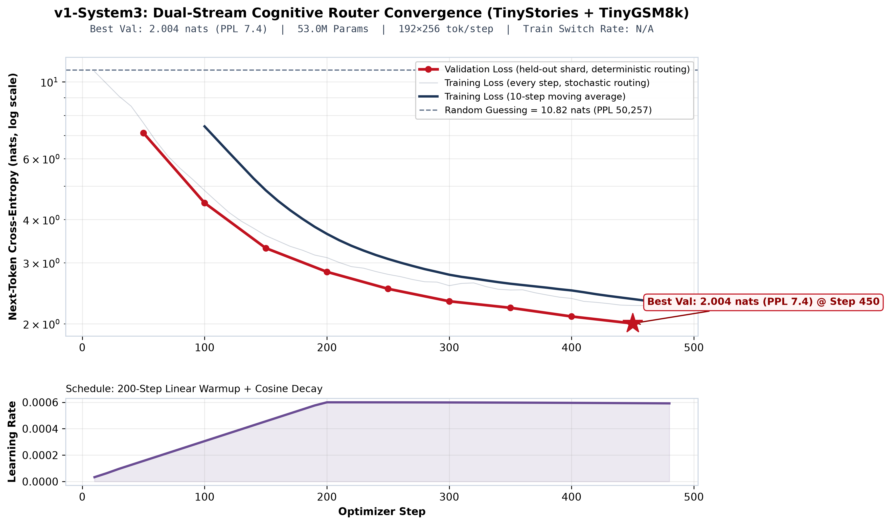
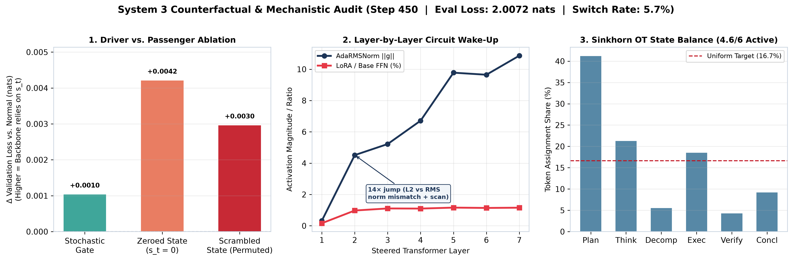
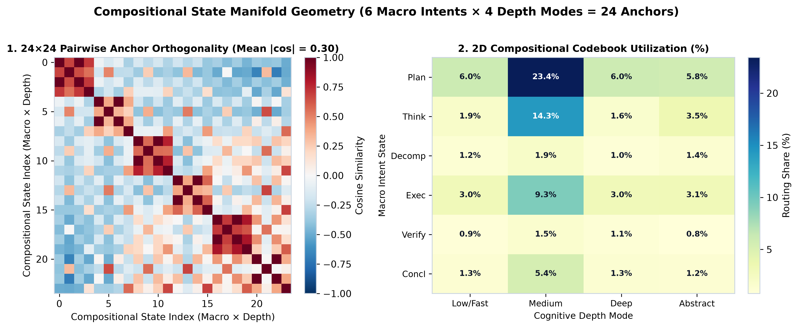
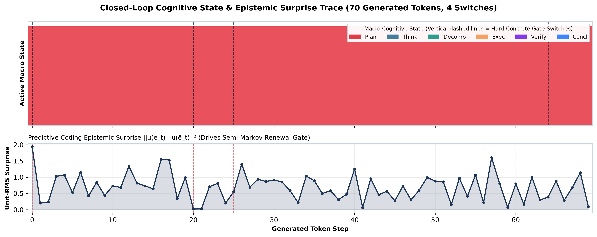

System 3: A Fast System 1 Router that Steers a System 2 Transformer
A small, event-driven latent state that stays put until something surprising happens — and quietly changes how the model thinks.
Abstract
Most language models think the same way about every token — a period and a punchline get the same treatment — and they keep no lasting sense of “what am I doing right now?”. System 3 adds that missing ingredient: a small, persistent mental state that stays the same for long stretches and only updates when the model is genuinely surprised by what it just saw. That state then gently reshapes how every layer of the network attends and transforms its input.
Technically, we embed a System 1 module — a JEPA-style predictive-coding, state-routing router — inside a conventional autoregressive System 2 transformer. We train a 53.0M-parameter model on TinyStories + TinyGSM8k to 2.004 nats held-out (perplexity 7.4), and — through a driver-vs-passenger audit — show the state is actually used: removing or scrambling it makes the model measurably worse. Every mechanism is an independent on/off switch.
1 The idea, in plain words
You already run on two speeds. Catch a ball, recognise a face, finish a familiar sentence — that is the fast, instinctive mode. It is cheap, it never stops running, and you barely notice it. Then there is the slow mode: doing long division, planning a trip, checking your own work. Deliberate, expensive, one careful step at a time.
Modern language models are almost entirely the slow kind. For every single word they re-run the same big, careful computation, and they carry no lasting sense of where they are in the task. Ask one to summarise a story and then to solve a maths problem, and internally there is no switch that says “we have changed activity now”. Everything is recomputed from scratch, word by word.
Our idea is to give it that missing sense. Alongside the fast word-by-word engine, we add a small, slow “state” — a handful of numbers that describe the model’s current frame of mind, like planning, explaining, or checking my answer. Crucially, that state does not change every word. It sits still, and it changes only when the model is genuinely surprised by what just happened — exactly like how you keep reading calmly until something unexpected makes you stop and re-read.
When the state does change, it doesn’t just pick a different internal setting. It reaches into every layer of the network and steers it — nudging attention and the feed-forward parts so the model thinks differently while that state is active. Fast engine, slow guide. That combination is what we call System 3.
Concretely, System 3 couples a System 1 module — a JEPA-style predictive-coding, state-routing router — with a standard autoregressive System 2 transformer. The router maintains a latent macro-state st, opens a calibrated, semi-Markov switch gate only when the predictive-coding residual — the model’s surprise — spikes, scores discrete and continuous state proposals with a System 1 bilinear-plus-value metric, and steers every transformer layer through AdaRMSNorm modulation, a state-routed LoRA-SwiGLU, and a per-head attention temperature.
Why bother — and why it should be testable
A model that could hold a frame of mind would, in principle, spend its effort where it belongs: a single “explain this simply” state could shape a whole paragraph without the model re-deciding its stance at every token. But a claim like that is easy to make and easy to fake — you can draw a beautiful internal state that the rest of the network secretly ignores. So we built the second half of the idea in from day one: a test that deletes or scrambles the state and checks whether the model gets worse. If it doesn’t get worse, the state was decoration.
Contributions
- A dual-stream architecture. A persistent, event-driven System 1 latent state st produced inside the model that modulates every steered layer of an otherwise ordinary autoregressive transformer.
- A predictive-coding switch gate. A dimension-invariant surprise signal bounded in
[0, 4]regardless of width, driving a calibrated Hard-Concrete gate with a semi-Markov dwell counter. - A compositional state space.
6 intents × 4 depth modes = 24anchors, blended with a per-position nuance vector and scored by a System 1 metric with an explicit “jump cost”. - A mechanistic audit protocol. A driver-vs-passenger counterfactual test plus a layer-by-layer weight and activation audit, shipped as one command.
2 Background
Two families of ideas already live close to ours, and it helps to see how. The first is prediction: our brains (and good compression) work by predicting what comes next and paying attention only to what they got wrong. The second is routing: instead of using one giant network for everything, send each token to the few small experts that suit it.
What neither has, by itself, is a memory of mood. Prediction gives you surprise, but a fresh surprise at every token. Routing picks experts, but forgets its choice immediately. Nobody keeps a single slow state that both lingers and steers. That gap is the one System 3 fills.
System 3 borrows its objective from predictive coding and JEPA, its mechanism from sparse routing and discrete stochastic gates, its interface from conditional normalisation (FiLM / adaLN), and its efficiency from low-rank adaptation and linear-time state updates.
Predictive coding / JEPA. Rao & Ballard (1999) framed perception as prediction-error minimisation; LeCun (2022) and Assran et al. (2023) turned it into the Joint-Embedding Predictive Architecture, predicting representations rather than raw inputs. System 3 uses the predictive residual not as a training objective alone but as the control signal that decides when to switch.
Sparse routing. Shazeer et al. (2017) and Fedus et al. (2022) route tokens to experts; the routing is per-token and time-independent. System 3’s routing is temporally persistent: the assignment is a latent state with a dwell time, and its balance objective is an optimal-transport (Sinkhorn) assignment rather than a top-1 gate.
Conditioning & steering. FiLM (Pérez et al., 2018) and adaLN-Zero (Peebles & Xie, 2023) modulate features from a conditioning vector; LoRA (Hu et al., 2022) injects low-rank updates. System 3 does both, but the conditioning vector is a learned, recurrent latent state, composed with a state-routed low-rank path and a per-head attention temperature.
State & time. Semi-Markov and hidden-Markov models (Rabiner, 1989) let a chain hold its state for a random duration; selective state-space models (Gu & Dao, 2024) run linear recurrence efficiently. System 3 adopts the dwell idea for switch timing and computes its inter-layer state refinement with an exact O(log T) Kogge–Stone associative scan.
3 Architecture
Think of System 3 as two workers with different rhythms. The first is the ordinary language model — fast, reading token by token. The second is a small supervisor that watches the fast worker but thinks slowly: it holds one “state” for a long time and only changes it when the fast worker seems surprised. When it does change, it leans over and adjusts the fast worker’s attention and thinking for a while.
That’s the whole shape of it. Everything below — the gates, the state space, the steering details — is engineering in service of those two roles.
The System 2 stream is a standard autoregressive transformer: embeddings, a state-free perceptual stem, a stack of steered blocks, a final RMSNorm and a tied LM head. The System 1 stream reads the stem’s context and emits, per position, a latent state st, a binary switch trace gt, and a dwell counter τt. The backbone perceives downward into the router; the router steers upward into the backbone.
4 Method
At every word, the supervisor runs one short checklist. It guesses what should come next; it measures how wrong that guess was; it decides whether the wrongness is big enough to change its state; if so, it picks a new state from a small menu; and then it uses that state to adjust the main model. Five quick steps, repeated word by word — but the state only actually moves when step three says yes.
Each position t executes five stages — predict, surprise, gate, propose, score — then writes the new state. The loop is fully differentiable, so gradients from the language-modelling loss reach the gate and the codebooks.
4.1 The switch: when to stop and rethink
The heart of System 3 is a very simple question: “did something unexpected just happen?” The supervisor makes a guess about the next word, compares it to what actually arrived, and produces a number — surprise. Low surprise means “carry on, keep the same state”; high surprise means “prick up your ears and update”. To avoid twitching at every tiny blip, we give the state a kind of inertia: it takes more than one surprise to move it, and it tracks how long it has held still.
Raw error is neither dimension- nor scale-invariant, so we project both the target and the prediction
onto the unit-RMS sphere before taking a mean squared error. The result provably lies
in [0, 4] regardless of d_model, and equals
2 · (1 − cos similarity) — surprise is a genuine geometric disagreement.
The target is the next-token embedding, not the post-attention context: consecutive context
vectors correlate at only cos ≈ 0.33 and the predictor plateaus, which would leave
surprise nearly constant and the gate with no usable input. Because the embedding is reused by the tied
LM head, this also ties the router’s objective to the model’s own output space. Raw surprise is
standardised against a running EMA of its mean and variance, so the gate always sees a zero-centred,
unit-variance signal.
Switching is a Hard-Concrete (stretched-L0) gate — a genuinely discrete
open/closed decision that stays differentiable through a reparameterised relaxation. Its open
probability is exactly σ(logit) (the temperature cancels), so the reported open
rate is the true one. While the gate stays closed the state is held and the dwell counter ticks:
The dwell counter τt is fed back through Fourier features, so the gate can
learn a rate of switching rather than a point condition. A rate_target loss pulls
the expected switch rate toward a small target (8%); an l0_penalty mode is available for
true sparsity.
4.2 The menu: a small space of “frames of mind”
When the state does change, what does it change to? We keep a small, fixed menu of “moves”, built from two knobs: what kind of thing am I doing (planning, explaining, checking…) and how hard am I thinking (a quick pass, a careful one). Mixing the two gives a grid of possibilities. We let the model also add a small personal twist to whichever option it picks — a bit of nuance — so it is never stuck with a rigid label.
A learned macro codebook (intent) and depth codebook (how much computation) combine multiplicatively into a compositional anchor:
giving 6 × 4 = 24 unit-norm anchors. Each position builds a joint query
ut from the context projection and — in the closed-loop variant — the
previous state, fetches the top-k anchors, and generates k continuous
“nuance” vectors. Each proposal is a local deviation around a discrete intent:
4.3 Choosing a state — with a bias toward staying put
Among the menu options, the supervisor picks the one that fits best. But it also has a mild reluctance to jump, like inertia. A new frame of mind has to be clearly better than the current one before the model will switch to it, which keeps behaviour stable and stops the state from flapping around.
Candidates are ranked by an interpretable System 1 metric: a bilinear compatibility term, a learned scalar value, the anchor’s routing logit, minus an explicit quadratic jump cost that penalises moving far from the current state.
The winner is selected with a straight-through Gumbel-softmax during training (argmax at eval), then mixed with the previous state by the gate. A Sinkhorn optimal-transport balance loss spreads traffic across the 24 anchors, an orthogonality or DPP diversity loss keeps proposals from collapsing, and a JEPA loss trains the predictor itself.
4.4 Steering: how a state changes the thinking
A state is only useful if it actually changes behaviour. So each state reaches into every layer through three small, independent levers: it retunes the layer’s normalisation, it subtly reshapes the attention (making some heads sharper or softer), and it adds a small, state-specific correction to the layer’s feed-forward maths. All three start switched off, so an untrained System 3 is exactly an ordinary transformer until it learns to use them.
- AdaRMSNorm modulation. The refined state yields per-channel gain and bias,
(1+g) ⊙ RMSNorm(h) + b. Zero-initialised, so the block begins as vanilla. - State-routed LoRA-SwiGLU. A low-rank perturbation of the feed-forward path, gated
per-rank by
SiLU(Wr s)— the state chooses how much of which low-rank direction to add. Also zero-initialised. - Per-head temperature & value gating. Each head’s query is scaled by
softplus(τhead(s))and the output gated byσ(Wv s).
Between layers the state is refined by an exact associative scan over the sequence (Kogge–Stone, O(log T)): a learned forget gate writes a small impulse into the state and the prefix scan accumulates it — a gated linear recurrence computed in parallel. The switch trace zeroes the gate at switch positions, so the scan respects the event boundaries the router found.
4.5 What training is asked to do
The model is trained on two goals at once. The obvious one: predict the next word well. The subtle ones: keep the states balanced (don’t put everything in one bucket), keep the candidate proposals varied, train the predictor to be a good predictor, and switch neither too often nor too rarely. Each goal is a separate, weighted term — and each can be turned off.
The JEPA term uses the same unit-RMS MSE as the gate (so the predictor is trained on exactly the quantity the gate acts on), the balance term is a Sinkhorn optimal-transport assignment over switched positions, the diversity term is a log-determinant (DPP) volume objective on the proposal Gram matrix, and the dwell term pulls the expected open rate toward the target switch rate.
5 Experimental setup
This is intentionally a small, honest test. We trained a modest 53-million parameter model from scratch on two small, well-understood datasets: short children’s stories (which tests fluent language) and grade-school maths word problems (which tests multi-step thinking). Small enough to run on limited hardware, real enough to see whether the idea helps at all.
Both datasets — TinyStories and TinyGSM8k — are tokenised
into a single flat uint16 stream; the tail 1% is held out for validation. The full
configuration of the reported run is below.
| Component | Value |
|---|---|
| Parameters | 53.0 M (tied embedding / LM head) |
| Breadth & depth | d_model=512, n_layers=8 (1 stem + 7 steered) |
| Attention | n_heads=8, n_kv_heads=2 (GQA), RoPE θ=10⁴ |
| State | d_state=128, 6 intents × 4 depth modes, k=4 proposals |
| Steering | LoRA rank 16 · AdaRMSNorm · per-head temperature |
| Sequence / batch | 256 × 192 = 49,152 tokens/step |
| Optimiser | AdamW, lr 6e-4, β=(0.9, 0.95), weight-decay 0.1, grad-clip 1.0 |
| Schedule | 200-step linear warmup → cosine decay |
| Precision | bf16 autocast (CUDA), TF32 matmuls |
| Checkpointing | auto-resume · best-val restore · early-stop patience 5 |
nn.Embedding initialises at N(0,1) and the LM head is tied to it, so an untrained
model starts at ~100 nats of loss and wastes warmup. We rescale the shared embedding to the
config’s initializer_range so training begins near
ln(vocab) ≈ 10.8 nats — the random-guessing line in Figure 4.
6 Results
Two questions matter. Did it learn, and is the state really doing anything? The first is easy to show with a learning curve. The second is the interesting one: a state can look meaningful in a picture while the rest of the model quietly ignores it. So we ran a direct test — delete or scramble the state, and see whether the model gets worse.
6.1 Did it learn?

6.2 Is the state a driver, or just decoration?
This is the test that keeps us honest. We take the trained model and run it three extra ways without any retraining: normally; with the state wiped to zero; and with the state shuffled so it no longer matches the text. If the state is doing real work, wiping or shuffling it should make predictions worse. It does — on both counts.
The counterfactual runs below intervene only on the forward pass. “Scrambled” permutes the state across batch and time, which preserves its statistics but destroys its correspondence to the input — a strict test of specificity.
| Condition | Held-out loss (nats) | Δ vs. normal | Reading |
|---|---|---|---|
| Normal eval (deterministic gate) | 2.0072 | — | reference |
| Calibrated stochastic gate | 2.0082 | +0.0010 | gate acts on a real distribution |
| Scrambled state (permuted b × t) | 2.0102 | +0.0030 | state is specific, not noise |
| Zeroed state (st = 0) | 2.0114 | +0.0042 | state is load-bearing |

6.3 What the state space looks like
A quick look inside the menu. The 24 possible states are not all equally spaced — some are naturally closer to each other, and we can see that with a similarity map. We can also see which states the model actually reaches for while reading real text.

6.4 Watching the state during generation
The clearest picture of the idea is a timeline. As the model writes, its surprise jiggles on nearly every word — it is always sensing. But its actual frame of mind barely moves: it stays in the same state for long stretches and changes only a handful of times. Fast sensing, slow deciding.

| Metric | Value | Notes |
|---|---|---|
| Best validation loss | 2.004 nats | perplexity 7.4 |
| Random-guessing baseline | 10.82 nats | perplexity 50,257 |
| Eval loss (audit pass) | 2.0072 nats | deterministic routing |
| Switch rate | 5.7 % | 8 % target, event-driven |
| Effective macro states | 4.6 / 6 | entropy-based |
| State-removed penalty | +0.0042 nats | zeroed state |
7 Ablations — one switch at a time
An idea with many parts is hard to evaluate all at once. So every mechanism in System 3 is a separate on/off switch. You can start from a bare-bones version that has none of the fancy parts, then turn on exactly one thing and see what it changes. That turns “is System 3 good?” into a series of small, answerable questions.
The rung-0 baseline uses open-loop routing, flat states, a plain softmax gate, Switch-MoE balancing, pairwise orthogonality, and FiLM-only steering. Each switch below is a validated field in a frozen config dataclass, so changing one cannot silently change another.
| Switch | Options | Mechanism |
|---|---|---|
state_mode | discrete · continuous · hybrid | anchor-only, nuance-only, or anchor+nuance proposals |
closed_loop_proposals | true · false | condition proposals on st−1 or not |
use_surprise_gate | true · false | gate sees (surprise, dwell) or only (ht, st−1) |
gate_type | hard_concrete · softmax | stretched-L0 gate vs. 2-way Gumbel-softmax |
balance_mode | none · switch · sinkhorn | anchor traffic balancing (OT assignment vs. Switch-MoE) |
diversity_mode | none · orthogonality · dpp | proposal de-collapse objective |
dwell_mode | none · rate_target · l0_penalty | switch-rate regularisation vs. true L0 sparsity |
use_state_scan | true · false | inter-layer parallel associative state refinement |
use_lora_swiglu | true · false | dynamic rank-r state-routed FFN perturbation |
use_head_temp_steering | true · false | state-modulated per-head attention temperature |
surprise_target | embedding · hidden | predictive-coding target for the switch gate |
minimal_baseline() returns the rung-0 config and with_ablation(**changes) is a
pure, immutable toggle — so an experiment is a one-line diff, not a code rewrite.
8 Discussion & limitations
We would rather undersell than overclaim. This is an early, small-scale result. The idea works in the sense that the state is genuinely used, but at this size the benefit is modest and there is a lot of room to scale.
- The scale is small. 53M parameters on TinyStories + TinyGSM8k is a proof of mechanism. 2.004 nats is a good small-model number and nothing more; the validation curve has not plateaued, so the model is undertrained rather than saturated.
- The driver signal is real but small. The +0.0042-nat penalty for zeroing the state is consistent across conditions, but it is a few thousandths of a nat: we can claim direction and specificity, not yet magnitude.
- Single seed, single dataset blend. No seed sweep and no second held-out dataset; the audit numbers are a snapshot at step 450.
- The anchor labels are an interpretation. Reading the six intents as Plan / Think / Decomp / Exec / Verify / Concl is a reading of an unsupervised codebook, not ground truth.
What we believe generalises is the shape of the idea: a persistent, event-driven latent state that steers rather than merely selects, with a built-in falsification test. Natural next steps: scale width and tokens until the driver delta is unmistakable; probe the codebook with causal, per-anchor interventions; and give the router a predictive-coding objective trained at a longer horizon than one token.
At this checkpoint the model is a genuine driver, but an early one: the steering pathways are awake and rising with depth, yet the LoRA path contributes only ~1% of the feed-forward signal. The substrate works; the amplitude is a matter of scale.
9 Conclusion
System 3 shows that a System 1 predictive-coding router can be embedded inside an ordinary autoregressive transformer, trained end-to-end with it, and — most importantly — that its contribution can be measured and falsified rather than asserted. The architecture is fully switchable, the audit is one command, and the result is a small model whose latent state demonstrably carries information the backbone uses. We release the code, the audit, and this report so the idea can be scaled, ablated, and contested.
10 Reproduce
Everything below runs from the repository root.
# 1. install
pip install -r requirements.txt
pip install -e ".[dev]"
# 2. train (auto-resumes from checkpoints/latest.pt)
python train.py --data tokens.uint16 --steps-per-run 200
# 3. plot the training curves from the saved checkpoint
python plot_history.py --ckpt-dir checkpoints --save curves.png
# 4. run the driver-vs-passenger audit + render Figure 5
python audit.py --data tokens.uint16 --save audit.png
# 5. tests
python -m pytest -q
The token shard is a flat uint16 array produced by your own tokenizer prep step; the tail
val_fraction of the stream is held out automatically for validation.
11 Citation
If you build on System 3, please cite the project:
@misc{tdizhere2026system3,
title = {System 3: A Fast System 1 Router that Steers a
Slow System 2 Transformer},
author = {tdizhere},
year = {2026}
}References
- Kahneman, D. (2011). Thinking, Fast and Slow. Farrar, Straus and Giroux.
- Rao, R. P. N. & Ballard, D. H. (1999). Predictive coding in the visual cortex. Nature Neuroscience, 2(1), 79–87.
- LeCun, Y. (2022). A Path Towards Autonomous Machine Intelligence. OpenReview.
- Assran, M., et al. (2023). Self-Supervised Learning from Images with a Joint-Embedding Predictive Architecture (I-JEPA). CVPR.
- Shazeer, N., et al. (2017). Outrageously Large Neural Networks: The Sparsely-Gated Mixture-of-Experts Layer. ICLR.
- Fedus, W., Zoph, B., Shazeer, N. (2022). Switch Transformers. JMLR.
- Louizos, C., Welling, M., Kingma, D. P. (2018). Learning Sparse Neural Networks through L0 Regularization. ICLR.
- Jang, E., Gu, S., Poole, B. (2017). Categorical Reparameterization with Gumbel-Softmax. ICLR.
- Maddison, C. J., Mnih, A., Teh, Y. W. (2017). The Concrete Distribution. ICLR.
- Pérez, E., Strub, F., de Vries, H., Dumoulin, V., Courville, A. (2018). FiLM: Visual Reasoning with a General Conditioning Layer. AAAI.
- Peebles, W. & Xie, S. (2023). Scalable Diffusion Models with Transformers (adaLN-Zero). ICCV.
- Hu, E., et al. (2022). LoRA: Low-Rank Adaptation of Large Language Models. ICLR.
- Gu, A. & Dao, T. (2024). Mamba: Linear-Time Sequence Modeling with Selective State Spaces. COLM.
- Rabiner, L. R. (1989). A Tutorial on Hidden Markov Models. Proc. IEEE.
- Cuturi, M. (2013). Sinkhorn Distances: Lightspeed Computation of Optimal Transport. NeurIPS.
- Kulesza, A. & Taskar, B. (2012). Determinantal Point Processes for Machine Learning. Foundations and Trends in ML.
- Blelloch, G. E. (1990). Prefix Sums and Their Applications. CMU Technical Report.
- Ainslie, J., et al. (2023). GQA: Training Generalized Multi-Query Transformer Models. EMNLP.
- Su, J., et al. (2021). RoFormer: Enhanced Transformer with Rotary Position Embedding. arXiv:2104.09864.
- Shazeer, N. (2020). GLU Variants Improve Transformer. arXiv:2002.05202.
- Zhang, B. & Sennrich, R. (2019). Root Mean Square Layer Normalization. NeurIPS.
- Vaswani, A., et al. (2017). Attention Is All You Need. NeurIPS.
- Eldan, R. & Li, Y. (2023). TinyStories. arXiv:2305.07759.
- Cobbe, K., et al. (2021). Training Verifiers to Solve Math Word Problems (GSM8K). arXiv:2110.14168.